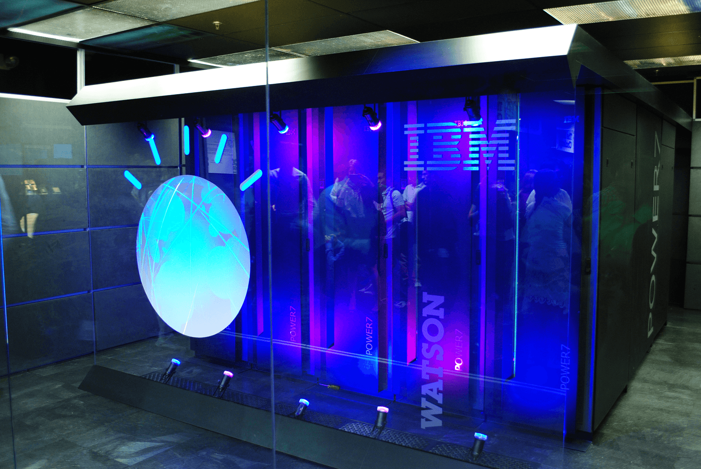

◆ What Is IBM Watson?

Watson is a question-answering computer system capable of answering questions posed in natural language, developed in IBM's DeepQA project by a research team led by principal investigator David Ferrucci. Watson was named after IBM's first CEO, industrialist Thomas J. Watson.
The computer system was initially developed to answer questions on the quiz show Jeopardy! and, in 2011, the Watson computer system competed on Jeopardy! against legendary champions Brad Rutter and Ken Jennings winning the first place prize of $1 million.
In February 2013, IBM announced that Watson software system's first commercial application would be for utilization management decisions in lung cancer treatment at Memorial Sloan Kettering Cancer Center, New York City, in conjunction with health insurance company WellPoint. IBM Watson's former business chief, Manoj Saxena, says that 90% of nurses in the field who use Watson now follow its guidance.
The system is workload-optimized, integrating massively parallel POWER7 processors and built on IBM's DeepQA technology, which it uses to generate hypotheses, gather massive evidence, and analyze data. Watson employs a cluster of ninety IBM Power 750 servers, each of which uses a 3.5 GHz POWER7 eight-core processor, with four threads per core. In total, the system has 2,880 POWER7 processor threads and 16 terabytes of RAM.
According to John Rennie, Watson can process 500 gigabytes, the equivalent of a million books, per second. IBM's master inventor and senior consultant, Tony Pearson, estimated Watson's hardware cost at about three million dollars.
|